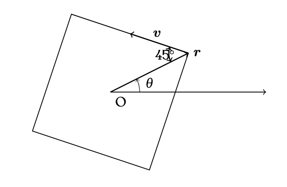
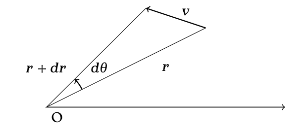
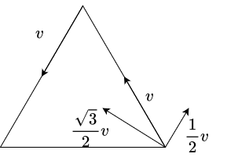

2 位置，速度，加速度
\(\require{physics}\)
この章では主に速度とか速度についてお話しさせていただきます．
まず，物理の話を始める際において，物理は何かということを明らかにしなければなりません．ところが物理とは何かという問題はあまりに大雑把で，人によってその定義が変わるものだし，専門とする分野によっても大きく姿を変えることでしょう．ですが，それらを全てまとめ上げ，最大公約数的な解答を一つ提示できるとすれば，私たちの身の回りで起きている，現象について語る学問だということになるのではないかと思います．
例えば，皆さんがこの本をパソコン越しでみているとします．その時，パソコンに映る表示映像というのも何らかの現象でしょう．ではその現象を観察し，何か語れるものがあるのかと考えてみましょう．例えば，「あ」という文字と「あ」という文字は全くもって同じ形をしているという法則が見つけられるかもしれません．マウスホイールを回すとテキストが流れていくという法則も見えてくるでしょう．
ところが現象とざっくり言ってしまっては，どの現象をどの角度から見ることになるかがはっきりしてきません．では，私たちがこれから学ぶ物理学の，ひとまず注視することとなる現象を考えることから始めましょう．その現象とは，動く物体です．
ここでは話がわかりやすくイメージできるように，とあるパチンコ玉を考えてみましょう．そのパチンコ玉は机の上に置かれていて，手で弾いてやると机の上をまっすぐ転がっていき，やがて机の淵から落ちて地面と衝突し，数度バウンスしたのちに床で止まりました．
さて，この現象を語るのに今は日本語という言葉を使いましたが，これでパチンコ玉の運動の仔細は語り尽くされたのでしょうか．弾き飛ばされたパチンコ玉がどれくらい早く動き，机に対してどんな角度で転がって，机の淵までどれくらいの時間で辿り着き，バウンスによってどれだけの高さに跳ね上がり，どの場所でその動きを止めたのか．少なくともこれらの情報がなければ，現象を語られた人が同一の現象を想定することは不可能でしょう．また，これらの情報を渡されたところで，全く同じ現象を想定するのも難しいに違いありません．そしてその再現度こそが，現象を語り尽くすことの根幹なのではないでしょうか．
では，どうすれば，パチンコ玉の運動を語り尽くせるのでしょうか．その時に使われるのが，数学の力なのです．
パチンコ玉の中心点の座標 \(\boldsymbol{r}\) を，時間 \(t\) ごとに追っていって，その全ての時間に対して解析を行い，時間の関数となる \(\boldsymbol{r}(t)\) を書き上げれば，上に書かれたすべての疑問に対して回答することができ，さらには現象を語り尽くすことができるのではないでしょうか．もっと具体的に言えば，パチンコ玉の回転なども考慮すべきでしょうが，今の所，それは無視することにします．
では，今，私たちはパチンコ玉の運動を語り尽くす手段を知りました．では，その運動の様相をどのようにして解析するのかを考える段階に入りましょう．確かに，パチンコ玉は \(\boldsymbol{r}(t)\) に従って動いていますが，我々の直感として「動いている」と感じることのできる指標である「速さ」が必要になるでしょう．動いているか，動いていないかの判別にも使えるし，動いている様相の説明にも使えるでしょう．
また，物理学という学問の性質上，古の巨人が築き上げた知識を引き継ぐことが大いにありますが，ニュートンの語るところによれば，物体の運動において大きな役割を持つ指標が加速度であるので，それも合わせて定義していくことにします．
速度とは，わずかな時間における時間あたりの位置の変化です．つまり，そのわずかな時間をかけてやることによって，わずかな時間に起きた位置の変化を求めることができ，さらに，そのわずかな時間に起きた位置の変化を全て足し合わせることによって，位置を求めることができるのです．
ここで， \(t=0\) から \(t=T\) までの時間を \(n\) 個に区切り，その一区切りの時間の長さを \(\Delta t\) ， \(i\) 区切り目の時刻を \(t_i\) としてやれば，
\[\boldsymbol{r}(t)\approx\sum_{i=0}^n \boldsymbol{v}(t_i)\Delta t\]
とすることができ，極限をとってあげることによって
\[\boldsymbol{r}(t)= \lim_{\Delta t \to 0}\sum_{i=0}^n \boldsymbol{v}(t_i)\Delta t=\int \boldsymbol{v}(t_i)\dd t\]
となるわけです．同様の話が加速度についても言えます．では，これからは実際に例題を用いて，今までの知識を深めていきましょう．
解答
まず， \(x=x_0\) から \(t=T\) だけ経った時に物体がどれだけ動いたか考えると
\[\int_0^T v \dd t=vT\]
なので， \(x_0+vT\) が答えになる．
次に別の方法を考えると，
\[x=\int v \dd t = vt+C\]
であるので，初期条件の \(t=0,\; x=x_0\) を代入すると
\[x = vt + x_0\]
ここで，積分が定積分ではなく，不定積分であることに注目せよ．定積分でない理由は，この場合， \(x\) を求めるのに，微分の逆演算をしているに過ぎず，ある定まった区間での積分として考えていない．
次の問題では，一次元の等加速度運動を全てまとめているものになります．
解答
前の問題の結果を使えば，
\[v=v_0+\int_{t_0}^{t}v\dd t = v_0 + a(t-t_0)\]
この解答は \((t-t_o)\) を一塊としてみて，先の問題の \(T\) のように扱っている．塊として考えればこれからの問題も比較的楽に解決される．ここでは \(T=t-t_0\) とすれば，
\[v=v_0 + aT\]
\[x-x_0=\int_{0}^{T}v\dd t =\frac{1}{2}aT^2+v_0T\]
\[x = \frac{1}{2}aT^2+v_0T + x_0\]
このように扱うことができるわけだが，読者が問題解決の際には \(T\) をわざわざ定義しなくとも，塊のまま見てあげることによって，
\[x = \frac{1}{2}a(t-t_0)^2+v_0(t-t_0) + x_0\]
としてあげれば良い．
では，先述した，加速度が物理において重要な役割を持つ理由について少し話しましょう．
地上において，支えをなくした物体が自由落下するという現象について，人類は長い間色々な議論を作り上げました．その中でもおそらく最も正確に現象に忠実な解釈は「自由落下する物体は常に鉛直方法下向きに一定の加速度を持つ」というものでしょう．その加速度の大きさは重力加速度といわれ， \(g=9.8\:\text{m}/\text{s}^2\) と測定されています．この本ではこれから特に断りなく \(g\) を重力加速度として扱っていくのでご注意ください．
簡単な例として，鉛直上向きに \(y\) 軸を設定し，初期位置が \(y=y_0\) である物体の自由落下を記述してみましょう．
\[\ddot{y}=-g\] \[\dot{y}=-gt\] \[y=y_0-\frac{1}{2}gt^2\]
次に，相対位置の定義だけ少し説明します．ベクトルになれた読者の方にとって，あまり難しい概念ではないので，定義だけ載せます．
では，実際の問題を解きながら，加速度と速度について慣れていきましょう．
解答
時刻\(t\)における物体 \(o\) の加速度は \((0,-g)\) となるので、これを積分すれば速度がもとまる．ベクトルの積分は各要素それぞれに対して行えばいいだけなので、 \(\boldsymbol{v}(t)=(C_1,C_2-gt)\) となる。ここで積分定数である \(C_1,C_2\) を決めていくこととなる．\[ \] 数学では不定積分は積分定数を放置したままやっていたことが多いと思われるが、物理では積分定数を決めなければならないことが多い。その理由は、数学では微分をすることによって元の関数に戻る関数群を求めていたと言う作業をしていたが、物理ではそのような関数群のうち、現実を記述していると思われる一つの関数を定めるからである。同時に二つ以上の速度を持つ物体というものは存在しないのだ。\[ \] では、どのようにして積分定数を求めていくかというと、前の0台と同じく，与えられた条件を代入すれば良い。同時に二つ以上の速度を持たない物体なのであれば、任意の時刻において一つの速度を持つはずである。この問題の場合、射出時に \((v_0\cos \theta, v_0 \sin \theta)\) の速度を持つことが与えられた条件で，このときの時刻を \(t_0\) とでもおいてやれば、 \(\boldsymbol{v}(t_0)=(v_0\cos \theta, v_0 \sin \theta)\) という方程式になる。これによって \(\boldsymbol{v}(t_0)=(v_0\cos \theta, v_0 \sin \theta-g(t-t_0))\) ともとまる。\[ \] 賢明な読者の方は開始時刻を \(t_0\) と置くのはエレファントな考え方であるというかもしれない。その通りである。開始時刻を \(0\) にすればもっと単純な式になる。だが，せっかくの例題なので，あえて面倒な方で解いても解けることをまず示しておこうと思う．\[ \] さて、解答の続きに戻ると、\(\boldsymbol{v}\) によって物体 \(o\) の座標 \(\boldsymbol{r}\) を求めないことには話は始まらない。ならば、 \(\boldsymbol{v}\) を再び \(t\) で積分してやって、時刻 \(t_0\) における物体 \(o\) の座標 \((x_0,y_0)\) でもって積分定数を求めてやれと、そう考えるのが先の発想であった。ここでは \(t-t_0\) という塊で考える。そうすれば自然と次が求める物体 \(o\) の座標になるわけである． \[\boldsymbol{r}(t)=(x_0+v_0\cos \theta (t-t_0), y_0+v_0 \sin \theta (t-t_0)-\frac{1}{2}g(t-t_0)^2)\] 同様に， \(t-t_0\) を塊としてみて，計算を続ければ軌跡は \[y=y_0+(x-x_0)\tan\theta-\frac{g}{2}\frac{(x-x_0)^2}{v_0^2\cos^2\theta}\] と，求まる．
結論を言えば、 \(r_y=y_0\) となる \(t\) は \(t-t_0=0,\frac{2v_o\sin\theta}{g}\) で、後者を \(r_x\) に代入し、 \[r_x=x_0+\frac{2v_0^2}{g}\sin \theta \cos \theta=x_0+\frac{v_0^2}{g}\sin 2\theta\] となることから、求める条件は\(\theta = \pi /4\)となる．とても直感にあった結果となったと思う．
この問題の作業は問題1と同じなので、略解のみを書く。求めるベクトルは \(T=t-t_0\) として， \[\boldsymbol{r}_r=(x_1-x_0-v_0\cos\theta T,y_1-y_0-v_0\sin\theta T)\]
\(\boldsymbol{r}_r=\boldsymbol{0}\) となる \(T\) が存在することが条件なので、 \[\theta = \tan ^{-1} \frac{y_1-y_0}{x_1-x_0}\] すなわち、最初から物体 \(o\) を物体 \(a\) に向けて発射さえすれば良いというのが、結論である。この次の問題である問題2をやれば、この問題を相対運動で見てやればただの等速運動問題であるとわかっていただけるだろう．
この場合の相対速度が \[\boldsymbol{r}_r=(x_1-x_0-v_0\cos\theta T,y_1-y_0-(v_0\sin\theta +v_1) T)\] であることは、容易にわかるではないかと思う。なので求める条件は \[\frac{\sin\theta + v_1/v_0}{\cos\theta} = \frac{y_1-y_0}{x_1-x_0}\] となります。
実際に各物体の座標を計算してみるのもいいが、両物体の座標が共通して持つ項は、相対位置ベクトルを計算する際に相殺されてしまう．例えばこの問題で言えば、両物体がどの方向であろうとも、同じような加速度を受ける状態なんであれば、 \[\boldsymbol{r}_r=(x_1-x_0-v_0\cos\theta T,y_1-y_0-v_0\sin\theta T)\] は変わらないです。ゆえに結果は変わりはない。加速度のみならず、速度や変位に関しても同じことが言えることにも注意せよ。
最後に放物運動についての重要な性質をいくつか書いておく．
- 放物開始点から最高点に達するまでの時間と，最高点から下の高さまで戻る時間は等しい
- 同じ高さでは同じ速さとなる
解答
車とトラックの原点から見た位置をそれぞれ \(x_1,\: x_2\) とした時，次の式が成り立つ．
\[x_1=\frac{1}{2}at^2,\;x_2=vt\]
車とトラックがすれ違う時間は \(x_1=x_2\) で求まるので， \[\underline{t=\frac{2v}{a}}\] 次に進んだ距離 \(s\) は \[s=\frac{2v^2}{a}\] 車の速さ \(V\) は \[V=2v\] となる．
解答
\[\int a\dd x=\int \dot{v}\dv{x}{t}\dd t = \int \dot{v}v\dd t=\frac{1}{2}v^2 +C\] 問題後半については， \[\int_{0}^{x}a\dd x=\int_{0}^{T}\dot{v}\dv{x}{t}\dd t = \int_{0}^{T}\dot{v}v\dd t=\left[\frac{1}{2}v^2\right]_{0}^{T}=\frac{1}{2}(V^2-v_0^2)\] \[\int_{0}^{x}a\dd x=ax\] から導き出される．
解答
高さ \(y=0,\:h\) の時の速さをそれぞれ \(u,v\) とした時，次の式が成り立つ \[v^2-u^2=-2gh\] \[(2v)^2-u^2=2gh\] この式から \(v\) を消すことによって次の式が成り立つ \[u^2=\frac{10}{3}gh\] 最後にこの物体がたどり着ける最高点の高さを \(H\) とした時， \[H=\frac{u^2}{2g}=\frac{5}{3}h\] となることがわかる．
解答
\[\int_{0}^{3x_0}a\dd x=\int_{0}^{T}\dot{v}\dv{x}{t}\dd t = \int_{0}^{T}\dot{v}v\dd t=\left[\frac{1}{2}v^2\right]_{0}^{T}=\frac{1}{2}(V^2-v_0^2)\]
また，台形の面積により，
\[\int_{0}^{3x_0}a\dd x = 2a_0x_0\]
\[V=\sqrt{v_0^2+4a_0x_0}\]
解答
川の流れる方向を \(y\) 軸，船の進む方向を \(x\) 軸，船の最初いる場所を原点として、 \(xy\) 座標を考える。船のいる座標は \(\boldsymbol{r}=(x,y)\) である時、川の流れは \(kx(L-x)\) となるので、 \(\boldsymbol{v}=(v,kx(L-x))\) となる。ここで、 \(x=vt\) から、 \(v_y=kvt(L-vt)\) となり、実際に積分計算をしてやると、 \(y=kvL\frac{t^2}{2}-kv^2\frac{t^3}{3}\) となり、軌跡を出さないといけないので \(t\) を代入をしてやれば、 \[y=\frac{kL}{2v}x^2-\frac{k}{3v}x^3\] が答えになる。
解答
コースの長さを \(L\) 、それぞれの車の加速度を \(a_A,a_B\) 、最大速度に達する時間を \(t,T\) とおくと次のような方程式が成り立つ． \[L=\frac{1}{2}a_At^2+a_At(T-t)\] \[L=\frac{1}{2}a_BT^2\] \[\frac{1}{2}L=\frac{1}{2}a_At^2\] これらの方程式は未知数が5つあるので、一見解決は無理そうに見えますが、全ての式が \(L\) だけの変数を持つ左辺を持つ事実と、右辺の字数が全て揃っているところから解決が可能である。実際、1,2番目の式を3番目の式で割ってやれば、 \(a_A/a_B,T/t\) の二つを未知数と見立てた方程式が出来上がり、実際に計算してやると、 \[\frac{a_A}{a_B}=\frac{9}{8},\;\frac{a_At}{a_BT}=\frac{3}{4}\] が求める比になる。
解答
流速とともに動く座標系で考える（もしこの考え方に馴染みがなければ，最初は飛ばしても良い）．この時，イカダは常に止まっており，モーターボードのみがイカダから離れては戻ってくる運動をする．この時，行きと戻りは，同じ距離を同じ速さで動いているので，ともに同じ時間 \(t\) だけかかり，合計 \(2t\) だけかかったことになる．ここで川に対してとまっている，地面に対して静止している座標系で考えた時，イカダは \(l\) だけ動いたことになる．つまり，イカダは \(2t\) の時間で \(l\) だけ動いたことになり，流速は \(l/2t\) と求まる．
次に少しだけだが煩雑な考え方をする． \(AB=BC+l\) なので，モーターボートが引き返したのちにイカダとすれ違うまでの時間を \(t'\) ,ボートのかわに対する速さを \(V\) とすると \[(V+v)t=l+(V-v)t'\] また，イカダは時間 \(t'\) の間に \(l\) だけ進んでいるので， \[vt'=l\] これらを連立することによって \[v=\frac{l}{2t}\] とわかる．
2.0.1 難問パート
これからの問題に対する直感的な解決法は問題の解答の後半にあるので、前半の記述が難しいと感じられたのであれば、スキップしてお読みいただければ嬉しいです。
解答
鉄板と車輪の速さを \(v,c\) とする。まず鉄板上を無数の点があると考える。鉄板が伸びるというのは、これらの無数の点の間隔が伸びることを意味する。次に、時刻 \(t\) の時を考える。伸びる前における座標 \(x\) の点上から座標 \(x-\dd x\) の点まで、車輪がマイナス方向に転がる時間が \(\dd t\) であるとする。二つの点の距離は鉄板の伸びから \(\frac{L+vt}{L}\dd x\) で、これを \(\dd t\) の時間で進むので、 \(c\dd t\) となり、次の式が成り立つ。 \[\frac{L+vt}{L}\dd x=c\dd t\] \[\dd x=\frac{c}{1+vt/L}\dd t\] 両辺を \(0\) から \(T\) 積分してやれば \[x=\frac{Lc}{v}\ln \frac{L+vT}{L}\] ここで求めた \(x\) とは、時間 \(T\) までに車輪が進んだ距離の、伸びる前における座標の換算になります。つまり、 \(x=L\) を代入して、求めた \(T\) の \[T=\frac{L}{v}(e^{\frac{v}{c}}-1)\] が端にまで辿り着く時間となる。つまり、問題の答えとしては、伸びる速さがどれほどはやくとも、車輪がどれほどノロノロしていようと、鉄板が最初どれほど長かろうとも、有限の時間で絶対に車輪は端にたどり着くということである。\ 一見不思議な結果のように思われるかもしないが、実は少しだけ考え方を変えてやれば簡単に解決する。\
後半部分
車輪は常に \(x\) 軸マイナス方向に進み続けているのだが、鉄板が伸びる速さがどれほどのものとなろうとも、伸びる前換算でプラス方向に進むことはあり得ない。なぜなら、車輪は常に鉄板に対して、その伸びる方向と逆方向に速さを持っているからである。なので、いつか絶対に端にたどり着くのだ。
解答
具体的にそれぞれの人の歩く軌跡をデカルト座標で考えていくとすれば非常な困難に立ちはだかることが予想される。では、人の動き方が、対称性から四人が常に四角形を成す位置にあり、ぐるぐる周っていくことから、極座標での解決の仕方はどうだろうか。  以上の図によって、おおよそ人のいつ場所と速度を考えることができる。ここで、時間を追って \(r,\theta\) がどのように動くかを考えてみると、次の図のようになる。  \(r,v\) の作る角度などから、次の2つの式を求めることができる． \[dr=-v\cos 45^\circ dt\] \[\tan 45 ^\circ = \frac{rd\theta}{dr}\] \(t=0\)の時、\(r=R,\theta=0\)として、微分方程式を解いていくことによって、 \[r=R-\frac{v}{\sqrt{2}}t\] \[d\theta=\frac{dr}{r}\] \[r=Re^{-\theta}\] \[\theta = \ln \frac{R}{R-\frac{v}{\sqrt{2}}t}\] のように \(r,\theta\) を \(t\) の関数で表すことができる。これらの式からA ,B ,C,Dが出会う時刻は \(\sqrt{2}R/v\) となり、無限回最終地点の周りを周ったことになる。では、彼らがどれだけ歩いたことになるのだろうか。この問題は次のように解決される。 \[\int_0^\infty \sqrt{r^2+(\frac{dr}{d\theta})^2} d\theta=\sqrt{2}R\] 正三角形の場合も似たような議論が可能であるが，省略する．
後半部分
Bから見たAの相対速さは，AとBの速度が常に垂直なので， \(1\) メートル毎秒となり、 \(100\) 秒後に \(100\) メートルに歩いて出会うことになる。対称性から無限回回転するか、一回も回転しないかどちらかで、明らかに後者ではないということもわかる。
正三角形の場合は別の考え方をする．

図のようにAは常に三角形の中心に向かって \(\sqrt{3}v/2\) の速さで進むことになる．三角形の中心からAまでの最初の距離は \(100/\sqrt{3}\) メートルなので，かかる時間は \(200/3\) 秒である．また，お互いに向かって歩いている割合は図からわかるように \(1:2\) なので，進む距離は \(100\times 2/3=200/3\) mである．